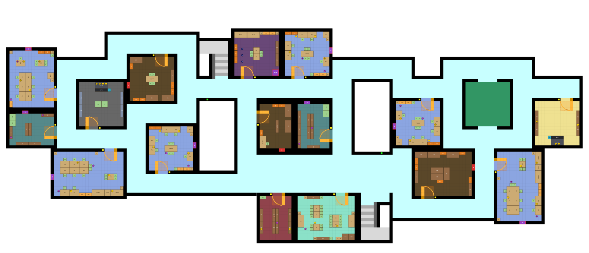
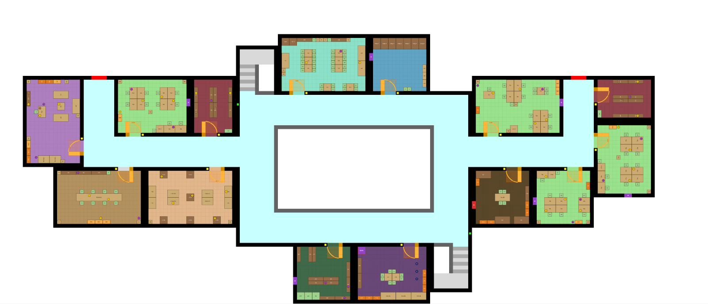

야옹이는 못말려 Thieflings
TEAM

소형 맵 · 2F — 중앙 홀과 좌우 시작 스폰 방(4m)을 기준으로 방 크기를 12·10·8m 세 단계로 나눈 복층 구조입니다.


중형 맵 · B1 — 지하층. 코인 슬롯 32개.


중형 맵 · 2F — 코인 슬롯 30개.
내가 한 일 핵심 담당
맵 설계 (소형 · 중형 · 마트)
Figma 시안에서 구현까지 세 맵(소형·중형·마트)을 설계·제작했습니다.
- 규격 소형: 방 12·10·8m와 복도 4m / 중형: 방 7종
- 통로 폭 0.86m 이상 기준(소형·중형)
- 코인 슬롯 소형 60 · 중형 90 · 마트 60개
상세는 아래에서 펼쳐 볼 수 있습니다.
탈출 퍼즐 3종
감옥 탈출 퍼즐 A·B·C 3종을 직접 구상했습니다. 세 퍼즐 모두 패널을 클릭해 돌려 입구와 출구를 잇는 같은 메커니즘이고, 쉬움 3×3 · 어려움 4×4가 있습니다.
- A 십자·곡선 2종 타일을 돌려 검은 길을 입구에서 출구까지 잇습니다.
- B 7종 타일로, 한 줄 길은 한 줄 길끼리, 두 줄 길은 두 줄 길끼리만 이어집니다(한 타일 안에 두 종류가 함께 있기도 합니다).
- C 거울 칸(레이저를 꺾음)과 통로 칸(레이저가 곧게 지나가고 옆면은 막음)을 돌려 입구의 레이저를 출구까지 보냅니다.
의도 조작은 단순하고 일관되게 두고 퍼즐마다 새로움을 느끼도록 해, 같은 퍼즐이 반복되는 지루함과 퍼즐을 풀지 못해 플레이가 멈추는 상황을 막으려 했습니다. 처음에는 A, B 두 종이었는데, 플레이테스트에서 미니게임이 더 있었으면 좋겠다는 응답이 있어 C를 추가했습니다.
범위 시안은 Figma에서 설계했고, 초기 화면과 판넬 프리팹은 AI를 활용해 구현했습니다. 이후 외형과 공통 틀은 팀원이 맡았습니다.
타이틀·결과 BGM
타이틀 곡(인트로 → 루프)과 결과 창의 승리 테마를 BandLab에서 직접 작곡해 게임에 삽입했습니다.
의도 경쾌한 파티 게임의 플레이 분위기와, 동물 캐릭터가 사는 마을 게임의 친근한 목소리를 떠올리며 만들었고, 가볍고 밝은 분위기에 주인공이 고양이라는 점에서 연상한 동물적인 느낌을 더했습니다.
들어보기
맵 설계 상세 눌러서 펼치기
설계 규칙
규격
- 소형 맵: 방 12×12m · 10×10m · 8×8m, 복도 폭 4m, 플레이어 시작 스폰 방 4×4m
- 중형 맵: 방 7종(한 변 8m 기준, 다른 변 6~12m)
- 소형·중형: 벽 두께 0.5m, 층고 4m (마트는 천장 높이 6m)
- 모든 맵 1칸 = 0.5m 그리드로 시안 작성
- 초기 맵을 돌아다녀 보니 가구를 놓고 나면 걸을 수 있는 면적이 생각보다 좁아, 소형 맵에서는 방과 복도를 더 넓게 잡았습니다. 시작 스폰 방은 스폰 용도로만 쓰여 최소 규모로 뒀습니다.
도주·추격 동선
- 잡힌 도둑은 맵과 떨어진 별도의 감옥방으로 이동해 탈출 퍼즐을 풀고 돌아옵니다. 초기에는 층마다 수감실을 두어 캠핑을 막는 방향이었고, 최종 게임에서 별도 감옥방 방식으로 바뀌었습니다.
전리품 배치
- 구역별 전리품 가치 등급 구분
- 코인 높이 0.3~1.25m: 야옹이의 시야 위치와 가구 오브젝트의 높이를 함께 고려해 정했습니다
- 방 안 가구 윗면 위주: 초기에는 바닥에도 두려 했으나, 바닥의 다른 소품과 구분하기 어렵다는 팀 내 의견을 받아 정했습니다
- 소형·중형: 플레이어 캡슐(반경 0.35m)이 통과 가능한 폭 0.86m 이상 확보
소형 맵 — 2층 구조코인 슬롯 60
기대한 플레이 전술적인 양상입니다. 이동 조작 자체를 바탕으로, 순간적이고 빠른 움직임으로 상대를 따돌리거나 추격하는 상황을 기대했습니다.
- 문이 없는 구조 빠른 템포의 움직임을 기대한 만큼, 문이 게임 플레이에 장애물이 되는 상황을 피하려 했습니다. 소형 맵의 가장 큰 특징입니다.
- 중앙 홀 1층과 2층에 명확한 구분감을 주고 싶었습니다. 1층에서는 한쪽 계단에서 반대쪽 계단이 보여서(2층은 구조가 꺾여 보이지 않음), 야옹이가 중앙 홀에 있을 때 계단에 있는 수위의 시선에서 벗어날 수 있는 공간이 필요했습니다.
- 층 구성 맵 규모마다 층 수를 다르게 두어(소형 2층, 중형 3층, 마트 1층) 플레이어가 맵마다 다른 환경에 놓인다고 느끼도록 했습니다. 소형 맵은 중앙 홀과 좌우 시작 스폰 방(4m)을 기준으로 방 크기를 12·10·8m 세 단계로 나눈 복층 구조입니다.
중형 맵 — 3층(B1/1F/2F) 고정 배치코인 슬롯 90
공간 구성 층마다 복도 구조를 다르게 구성했습니다.
- 1F 중앙은 넓은 홀 하나로 이어지는 단일형, 양옆은 방 둘레를 돌 수 있는 순환형 복도입니다.
- 2F 중앙은 뚫린 공간을 도는 순환형, 양옆은 한 줄로 이어지는 단일형 복도입니다.
- B1 복도가 꺾이고 좁아지는 미로형 구조입니다.
- 용어 순환형은 돌아서 제자리로 올 수 있는 고리 구조, 단일형은 고리 없이 한 줄(또는 하나의 열린 공간)로 이어지는 구조입니다.
- 방 한 변을 8m로 두고 다른 변을 6~12m로 바꾼 7종이며, 모든 방에 문이 있습니다.
제작 과정 처음에는 층마다 중앙 구역 1개에 측면 구역 형태 3개 중 2개를 골라 붙이는 방식(층당 6가지 구성)으로 판마다 맵이 달라지게 설계했습니다. 그러나 구현이 안정적이지 않았고 프로젝트의 게임 방향도 바뀌어, 층마다 그중 하나의 구성을 골라 고정 배치로 확정했습니다.
- 금고 방 2곳은 코인 슬롯을 3개로 고정해 선반 위 보상을 의도적으로 노출했습니다. 금고실을 탐색하고도 아무 보상을 챙기지 못하는 상황을 막고, 작더라도 보상을 가져가는 것이 자연스럽게 느껴지도록 한 것입니다.
- 방 종류별 가중치는 두지 않고, 층·방 면적에 비례해 1~4개씩 배분했습니다.
마트 맵 — 1층, 121m × 81m 대형 맵코인 슬롯 60
기대한 플레이 전략적인 양상입니다. 비교적 먼 위치에서 상대를 발견했을 때, 상대가 다음에 어느 공간으로 이동할지 예측하며 행동하기를 기대했습니다.
- 판매 구역(진열대 통로, 푸드코트) 넓고 열린 공간이며, 높은 구조물(진열대 등) 위주입니다.
- 직원 구역(사무실) 좁고 닫힌 공간이며, 낮은 구조물(책상 등) 위주입니다.
- 수위와 야옹이 사이의 심리전 야옹이에게 열린 공간은 탐색이 피곤하지만 들켜도 도망치기 쉽고, 닫힌 공간은 탐색이 빠르지만 들키면 도망치기 어렵습니다.
- 허공에 뜬 소품 177 → 9, 가장자리 밖으로 나간 소품 249 → 34로 줄였습니다.
- 평면도 v1 → v3로 세 차례 수정하며 통로 폭과 계산대 배치를 조정했습니다.
그 밖의 작업 보조 담당
결과 창과 라운드 HUD
결과 창과 라운드 HUD의 와이어프레임을 Figma에서 그렸습니다.
- 결과 창 종료 발표 · 승패 · 점수표 · 개인 결과
- 라운드 HUD 남은 시간, 역할·관문 안내, 위험 표시
의도 PvP에서 가장 중요한 것은 승패라고 보고, 결과 창은 승패 → 개인 점수 → MVP 여부 순으로 플레이어 본인의 결과를 먼저 보여 주도록 구상했습니다.
범위 구성과 기능은 AI를 활용해 구현했습니다. 프로젝트 방향이 바뀌면서 최종 화면은 초기 시안과 달라졌고, 이후 팀원이 확장했습니다.
감옥 방
독립 감옥 방 씬의 초기 버전을 만들었습니다.
UI 안내 문구
플레이어가 상황을 이해하도록 돕는 UI 문구를 정리·작성했습니다.
- 영어로 남은 UI 문자열을 한글 용어로 통일
- 첫 실행 안내, 아이템전 가이드, 포획 감점 표시 등의 문구 작성
튜토리얼
연습 방의 외형(장식, 라벨)을 보정했습니다.
범위 구조와 규칙 설계는 팀원이 담당했습니다.